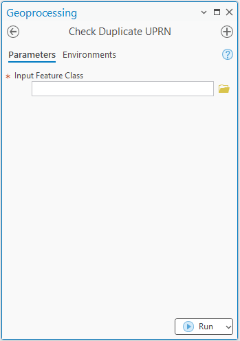
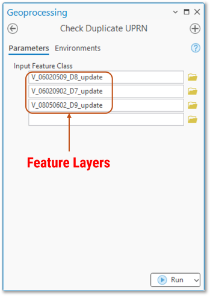
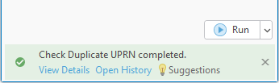
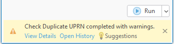
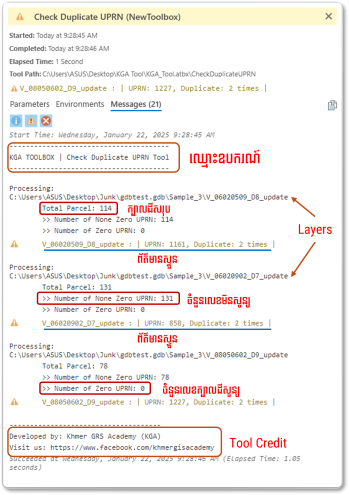

ឧបករណ៍សម្រាប់ឆែកលេខក្បាលដីស្ទួន
សេចក្តីផ្តើម
ក្នុងការងារគ្រប់គ្រងទិន្នន័យក្បាលដី លេខក្បាលដីជាព័ត៌មានមួយដ៏សំខាន់បំផុត សម្រាប់បញ្ជាក់អត្តសញ្ញាណនៃក្បាលដី។ ការគ្រប់គ្រងក្បាលដី ត្រូវផ្តោតសំខាន់លើរឿងមួយចំនួនដូចជា
- Field Format
- លេខក្បាលដី
- លេខកូដភូមិ
- លេខសម្គាល់ក្បាលដី
- កាលបរិច្ឆេទបញ្ចូលព័ត៌មាន
- ឈ្មោះអ្នកគូស ឬឈ្មោះម្ចាស់ដីជាដើម
មិនយល់ ឬមិនស្គាល់ធាតុខាងលើ?
- Field Format : សំដៅលើ Attribute Field សំខាន់ៗនៃទិន្នន័យក្បាលដី ដែលជាតម្រូវការ និងទាមទារចាំបាច់ពី ក្រសួងរៀបចំដែនដី នគរូបនីយកម្ម និងសំណង់ (MLMUPC)
-
កូដភូមិ : គឺជាផ្នែកមួយនៃប្រព័ន្ធសំគាល់ផ្នែករដ្ឋបាលនៅកម្ពុជា។ កូដនេះត្រូវបានបែងចែកជាចំនួនគ្នាពីរដើម្បីតំណាងឱ្យកម្រិតរដ្ឋបាលផ្សេងៗ ចាប់ពីខេត្តរហូតដល់ភូមិ។ ខាងក្រោមនេះ គឺជាការរបៀបនៃការបែងចែកលេខកូដរដ្ឋបាលនៃប្រទេសកម្ពុជា៖
- កូដខេត្ត: លេខពីរដំបូងតំណាងឱ្យខេត្ត។
- កូដស្រុក: លេខពីរបន្ទាប់តំណាងឱ្យស្រុកក្នុងខេត្ត។
- កូដឃុំ: លេខពីរបន្ទាប់តំណាងឱ្យឃុំក្នុងស្រុក។
- កូដភូមិ: លេខពីរចុងក្រោយតំណាងឱ្យភូមិជាក់លាក់ក្នុងឃុំ។
ឧទាហរណ៍៖ លេខកូដ ០៦០២០៨០៣ ជាលេខកូដសម្គាល់ភូមិមួយឈ្មោះ ភូមិឬស្សីជះ ឃុំត្បែង ស្រុកកំពង់ស្វាយ ខេត្តកំពង់ធំ
- ០៦: ខេត្តកំពង់ធំ
- ០២: ស្រុកកំពង់ស្វាយ
- ០៨: ឃុំត្បែង
- ០៣: ភូមិឬស្សីជះ
-
លេខក្បាលដី (UPRN) ជាលេខកំណត់ពីលេខអត្តសញ្ញាណជាក់លាក់ និង មានតែមួយគត់(Unique) នៃក្បាលដីក្នុងយុទ្ធនាការចុះបញ្ជីក្បាលដីមានលក្ខណៈជាប្រព័ន្ធ
- លេខសម្គាល់ក្បាលដី ជាការផ្គុំឡើងដោយតម្លៃលេខកូដភូមិ និងលេខក្បាលដី ដោយប្រើប្រាស់សញ្ញាដក '-'។
- កាលបរិច្ឆេទបញ្ចូលព័ត៌មាន ជាកាលបរិច្ឆេទដែលព័ត៌មានក្បាលដីត្រូវបានបញ្ចូល
- ឈ្មោះអ្នកគូស ឬឈ្មោះម្ចាស់ដីជាដើម
ក្រៅពីការគ្រប់គ្រងទិន្នន័យក្នុង តារាង Attribute អ្នកគ្រប់គ្រងទិន្នន័យក៏ត្រូវគ្រប់គ្រងទៅលើភាពត្រឹមត្រូវលើលក្ខណៈធរណីមាត្ររបស់ទិន្នន័យក្បាលដីផងដែរ។ ការពិនិត្យលើភាពត្រឹមត្រឹមនៃលក្ខណៈធរណីមាត្រក្បាលដី សំដៅមួយផ្នែកលើការគ្រប់គ្រង់ទៅលើភាពគង ឬចន្លោះរវាងក្បាលដីនិងក្បាលដី របស់ក្បាលដីក្នុងភូមិ និងឆ្លងភូមិជាដើម។ល។
ការពិនិត្យលើលេខក្បាលដីស្ទួននៅក្នុងភូមិ ជាចំនុចសំខាន់មួយដែរនៅក្នុងការងារគ្រប់គ្រងក្បាលដី។ បើសិនជាមានលេខក្បាលដីស្ទួន ហើយអ្នកគ្រប់គ្រងមានការឆកល្វែងក្នុងការពិនិត្យ វានឹងនាំឲ្យមានការរាំងស្ទះ ដល់ការវិនិច្ឆ័យ ក្នុងដំណើរការចុះបញ្ជីដីធ្លីមានលក្ខណៈជាប្រព័ន្ធ។ ការពិនិត្យលើមើលលេខក្បាលដីស្ទួនក្នុង តារាង Attribute នៃទិន្នន័យក្បាលដីដោយផ្ទាល់ មិនអាចធ្វើទៅបានទេ ដោយសារកម្មវិធី ArcGIS Pro មិនបានផ្តល់នូវមុខងារនោះដល់អ្នកប្រើប្រាស់។ យ៉ាងណាមិញ យើងប្រើប្រាស់កម្មវិធីខាងក្រៅដូចជា Microsoft Excel ជាជំនួយបាន។
ចង់ចេះឆែកលេខស្ទួនដោយប្រើ Excel?
ងាយទេ!! យើងអាចឆែកបាន ដោយប្រើប្រាស់មុខងារ Conditional Formatting ដោយចម្លងតារាងទិន្នន័យពី Attribute ទៅដាក់ក្នុង Excel ហើយជ្រើសរើសជួរឈរ ដែលផ្ទុកលេខក្បាលដី រួចចូលទៅកាន់ Conditional Formatting >> Highlight Cells Rules >> Duplicate Values..
ការប្រើប្រាស់កម្មវិធី Excel អាចជួយបានក៏ពិតមែន តែវានៅតែមានការលំបាកដដែល នៅក្នុងករណីមានទិន្នន័យច្រើន។ អាស្រ័យហេតុនេះ Khmer GRS Academy បានបង្កើតនូវឧបករណ៍មួយ ប្រើប្រាស់ដើម្បីសម្រួលដល់ការឆែកលេខស្ទួននេះបានយ៉ាងងាយ។
អំពីឧបករណ៍ឆែកលេខក្បាលដី
ឧបករណ៍នេះមានតែមួយប៉ារ៉ាម៉ែត្រទេ ហើយវាទទួលតម្លៃជា Feature Layer ដែលអាចជា Feature Layer, Feature Class, ឬក៏ជា Shapefile។ តម្លៃដែលប៉ារ៉ាមែត្រនេះទទួល អាចមានមួយ ឬច្រើន (Multivalue)។ Script ដែលបង្កប់នៅក្នុងឧបករណ៍នេះ ត្រូវមានបង្កើតឡើងដោយ Khmer GRS Academy ដោយប្រើប្រាស់ Arcpy Module របស់ ESRI។
រូបភាពខាងក្រោមនេះជាផ្ទៃមុខរបស់ឧបករណ៍

ទាញយកឧបករណ៍
ដើម្បីអាចប្រើប្រាស់ឧបករណ៍នេះបាន លោកអ្នកអាចចុចទាញយកឧបករណ៍ស្រាប់ឆែកលេខក្បាលដីស្ទួន សម្រាប់កម្មវិធី ArcMap ឬ ArcGIS Pro បានតាមរយៈតំណភ្ជាប់ខាងក្រោមនេះ។ ឧបករណ៍នេះត្រូវបានផ្ទុកក្នុង Toolbox(.atbx ឬ .tbx)។ File .atbx ជា Toolbox សម្រាប់ប្រើប្រាស់ក្នុងកម្មវិធី ArcGIS Pro និង File .tbx សម្រាប់ប្រើប្រាស់ក្នុងកម្មវិធី ArcMap។
ការដំណើរការរបស់ឧបករណ៍
ការបញ្ចូលទិន្នន័យសម្រាប់ឆែកលេខក្បាលដីស្ទួន។ ទិន្នន័យក្បាលដី (Parcel Layer) ជា Feature Layer, Feature Class, ឬ Shapefile អាចបញ្ចូលបានតែមួយ ឬច្រើនទៅក្នុងប៉ារ៉ាម៉ែត្រ Input Features។

នៅពេលបញ្ចូល Layer ហើយ ជំហ៊ានបន្ទាប់គឺចុចប៊ូតុង Run។ នៅពេលដំណើរការចប់ ឧបករណ៍នឹងបង្ហាញសារនៅផ្នែកខាងក្រោមនៃឧបករណ៍ ដូចបានបង្ហាញក្នុងរូបខាងក្រោម។ ប្រសិនបើទិន្នន័យក្បាលដីមិនមានលេខស្ទួនទេ ឧបករណ៍នឹងបង្ហាញសារពណ៌បៃតងធម្មតាជាមួយនឹងពាក្យថា Check Duplicate UPRN completed។ បើសិនជាមានលេខស្ទួន ឧបករណ៍នឹងបង្ហាញសារព្រមានជាមួយនឹងពាក្យថា Check Duplicate UPRN completed with warnings។

(រូបភាពបង្ហាញពីសារបានពីឧបករណ៍ ក្នុងករណីមិនមានលេខក្បាលដីស្តួន)

(រូបភាពបង្ហាញពីសារបានពីឧបករណ៍ ក្នុងករណីមានលេខក្បាលដីស្ទួន)
ដើម្បីមើលពីលទ្ធផលដែលបានពីឧបករណ៍ ចុច View Detail ដែលនៅខាងក្រោមសារដែលបានពីឧបករណ៍។ លទ្ធផលនឹងបង្ហាញដូចរូបខាងក្រោម

របៀបប្រើប្រាស់
ទស្សនាវីដេអូខាងក្រោមអំពីរបៀបប្រើប្រាស់ឧបរកណ៍